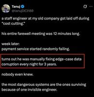

0
Dell's stock skyrocketed 32.76% on Friday, "its best day ever," reports CNBC, after Dell "reported its fastest pace for revenue growth for any period since returning to the public market in 2018..."
"Shares are now up 234% in 2026."
Dell, which reported first-quarter earnings after the bell on Thursday, saw a flood of artificial intelligence-related demand for its servers, which contain graphics processing units from companies like Nvidia. Quarterly revenue soared nearly 88% year over year, with AI server revenue alone increasing 757% from a year earlier to $16.1 billion...
Ben Reitzes, head of technology research at [research/investment firm] Melius, said he'd "never seen anything like" Dell's latest quarter. "They beat every line in the model, so this wasn't just AI, it was great execution," Reitzes told CNBC's "Squawk on the Street." "They beat whatever we would've thought...."
Morgan Stanley wrote that while they expected a clean beat and raise this quarter, they're "eating our humble pie" off the back of Dell's results. "We got this one wrong, and our model/PT are under review," the analysts wrote. "This was — across the board — one of the most impressive quarters we've seen in our time covering Hardware, especially in the context of what is happening across the component universe."
Read more of this story at Slashdot.
Wix is laying off roughly 20% of its workforce, about 1,000 employees, as CEO Avishai Abrahami cites both the rapid evolution of AI and currency pressure from a stronger Israeli shekel against the dollar. The web developer joins a growing list of tech companies making similar cuts, including Amazon, Block, Cisco, Cloudflare, Meta, Microsoft, Oracle and Intuit. Fast Company reports: "We have witnessed the most significant shift in how companies are built since the invention of modern programming languages in the 1970s," [wrote Abrahami]. "This is not just about adopting new tools -- it is about rewiring how companies are built, how they think, how they manage, and how they operate. Companies that embrace this change will not only build faster; they will build things the previous generation literally could not have imagined."
Abrahami also cited the poor exchange rate between the Israeli shekel and the U.S. dollar. The Israeli currency has significantly strengthened in the past few quarters against a weakening dollar, and the shekel is up nearly 30% against the greenback over the last year.
"As the majority of our teams are Israel-based, a very meaningful portion of our costs are shekel-denominated, while our revenue is largely dollar-denominated," Abrahami explained on X. "This creates a structural pressure on our ability to operate at our current scale. It is a reality that directly shapes what is sustainable for our company."
Read more of this story at Slashdot.
An anonymous reader quotes a report from MIT News: Currently, lithium hard rock extraction involves baking the rock at over 1,000 Celsius and chemically leaching it to extract lithium. The rest of the rock is discarded. Now, a team of researchers from MIT and elsewhere has developed a low-temperature process for extracting battery-grade lithium from the most common type of lithium-bearing mineral. The process uses a liquid reagent to dissolve the rock into the useful forms of its constituent parts: not just battery-ready lithium salts, but also smelter-grade alumina and cement-ready silica. After the minerals are extracted, the solvent and reagent can be recovered and used again so waste levels approach zero. The researchers estimate the closed-loop process is half the cost of traditional lithium hard rock extraction and could make it cost-competitive with extracting lithium from brine water. "We believe this approach is the lowest-energy, lowest-cost way of getting lithium not only out of hard rock, but period," says Yet-Ming Chiang, MIT's Kyocera Professor of Materials Science and Engineering. "That's what's motivating us to scale this. It will enable the energy transition through batteries that use lithium. This was one of the goals of The Climate Project at MIT -- to work on projects that, within a short number of years, could transition from the lab to commercialization and impact."
A paper describing the process has been published in the journal Science.
Read more of this story at Slashdot.
A new Grundfos report warns that Europe's datacenter boom could strain water supplies and power grids unless regulators bake water and energy efficiency into planning, reporting, and incentives for new facilities. The Register reports: According to the report, the EU-wide server farm IT load is about 10 GW today, and is expected to rise to 35 GW by 2030 -- just four years away. These facilities account for about 3 percent of all electricity consumption now, but this is projected to hit 7-9 percent by the end of the decade. Water and energy are intertwined in cooling systems. Grundfos claims that cooling infrastructure accounts for a substantial share of a datacenter's resource use, representing about 38 percent of total electricity consumption in an average facility, while water demand in large hyperscale facilities can reach 11,356 to 18,927 cubic meters per day -- enough for up to 155,000 EU households.
Rapid growth in bit barns is placing increased pressure on energy systems, water resources and local infrastructure, the report notes. Without careful coordination, inefficient or poorly sited facilities risk exacerbating these problems and triggering public opposition. [...] Grundfos advises regulators to integrate water efficiency and cooling design requirements directly into planning approvals for new facilities and any large-scale expansions to encourage adoption of efficient cooling technologies. It also advocates investment incentives from governments such as tax credits, green financing mechanisms, and grant programs for technologies that demonstrably reduce energy and water consumption. Integration between server halls and district heating networks is another aspect worth consideration, the report adds.
Read more of this story at Slashdot.
Anthropic has released Claude Opus 4.8 with stronger performance and better handling of uncertain or flawed data, including a greater tendency to flag issues rather than make unsupported claims. The update also introduces a "Dynamic Workflows" research preview for coordinating complex tasks across many subagents. TechCrunch reports: Opus 4.8 comes with the expected best-in-class benchmark results, but there's also particular attention to how the model manages bad or uncertain data. In the launch post, Anthropic's early testers found that the new model is "more likely to flag uncertainties about its work and less likely to make unsupported claims." Echoing this point, a testimonial from Bridgewater associates said the biggest difference in the upgrade was "Opus 4.8's tendency to proactively flag issues with the inputs and outputs of an analysis, something other models routinely missed and left to the users to catch."
Together with the new model, Anthropic launched a feature called Dynamic Workflows, which will be available in research preview. The system is designed to help larger models like Opus manage complex tasks across hundreds of parallel subagents. "Claude Code alongside Opus 4.8 can now carry out codebase-scale migrations across hundreds of thousands of lines of code from kickoff to merge, with the existing test suite as its bar," the post explains. As for Mythos, Anthropic's most advanced model, the company hinted it could be made publicly available in the not too distant future. "We're making swift progress on developing these safeguards and expect to be able to bring Mythos-class models to all our customers in the coming weeks," the company wrote.
Read more of this story at Slashdot.
An anonymous reader quotes a report from Gizmodo: In an era where Silicon Valley's conservatism is both expressed openly and becoming more intense by the day, it's strange to think that tech was once seen as a hive of liberalism. The right-wing nature of today's tech industry means that its products tend to also be seen as serving right-wing interests, either in their actual operation (like X's openly and unrepentantly right-wing chatbot Grok) or by the simple fact that their existence serves to enrich a small group of very powerful, very conservative people.
But does it have to be this way? Can LLMs and AI agents find a place in the toolkit of progressive activist groups? The conviction that they can is the idea behind a new app called Outcry, which provides a chatbot designed specifically as a "private, on-device AI mentor for activists, organizers and movement builders." (There's also a web version, although it obviously lacks the privacy benefits of being entirely offline.) It's the brainchild of Occupy Wall Street co-creator Micah White, who recently wrote a blog post about the thinking behind the project.
[...] Outcry's other distinguishing feature is that its dataset is entirely offline -- it's included with the download. According to the readme, the entire dataset is downloaded to your device at first launch, and stored in your library's Application Support directory. So, how effectively does Outcry serve as a guide for collective action? "I'd say that its information is pretty high-level and general, not least because its offline nature prevents it from accessing specific details not contained in its database," writes Gizmodo's Tom Hawking.
He continued: "This app has the potential to be a really valuable resource, especially for people who are just beginning to become involved with activism and genuinely don't know where to begin -- and getting over that first step can be hard."
Read more of this story at Slashdot.
Illinois lawmakers on Wednesday passed a landmark AI safety bill (SB 315) that would require major AI companies to publish safety plans, submit annual third-party testing reports, report serious incidents quickly, and protect whistleblowers who flag emerging risks. OpenAI and Anthropic supported the bill, which could make Illinois a testing ground for state-level AI governance as federal regulation remains stalled. Ars Technica reports: To force companies to be more transparent about rapid developments, Illinois would likely rely on "the Big Four accounting and auditing firms -- Deloitte, EY, KPMG, and PwC -- to audit their safety practices," [said Scott Wisor, a policy director at a nonprofit called Secure AI Project, which supported the bill]. The required independent audits will likely frustrate Trump, who has tried and failed to stop states from implementing AI safety laws as Congress stalls on passing any legislation.
For Trump, the priority has been to promote AI industry interests, but he began considering expanding federal government safety testing after Anthropic's Mythos was released and the AI firm limited access due to safety concerns. Whether or not governments at any level are prepared to protect society from the most catastrophic AI risks remains a major concern for critics who wonder how and when governments will intervene. After inside sources started leaking the details of Trump's AI safety testing plans, critics warned that even the federal government may lack the necessary expertise to audit frontier AI models. And it seems the same criticism extends to independent auditors that Illinois may rely on but industry insiders suggest some AI firms may not entirely trust.
Adam Kovacevich is CEO of Chamber of Progress, a trade group that opposed SB 315 and counts Google and Apple among its members. He told Wired that Illinois' requirements "would force companies to expose sensitive systems to untested auditors in a regulatory regime that's all liability and no standards." Governor J.B. Pritzker confirmed his intent to sign, proclaiming that "Illinois is leading the nation in holding Big Tech accountable."
"I look forward to signing SB 315 and working with the legislature so that AI, when used, is used responsibly," Pritzker said.
Steve Wimmer, a senior policy and technical advisor for the Transparency Coalition, said his group considers the law to be "one of the most important pieces of legislation in 2026."
Read more of this story at Slashdot.
Valve's Steam Deck has sold out again despite a steep price increase that pushed the 1TB OLED model as high as $949 -- about $300 above its original price. "Even with the $300 price bump, the Steam Deck sold out after less than 24 hours back in stock," reports IGN's Jacqueline Thomas. "I don't know how many units Valve was able to stock into its store, but it does seem like Valve spent a couple weeks building up its stock before putting the handheld back on its store." IGN reports: Over the last couple weeks, Valve has been receiving plenty of "game console" shipments from China. At first, I thought this was a sign that the company was getting ready to finally release the Steam Machine, but it looks like at least a portion of these shipments â" if not all of them -- were Steam Deck restocks. That's a lot of Steam Decks to sell through at these inflated prices, but it's also possible that Valve is just staggering its stock so that its delivery infrastructure isn't overwhelmed.
Now its just a question of when the Steam Deck will come back in stock. Before yesterday, the Deck was sold out for months. At the time, it was the most affordable way to get into PC gaming, especially in the face of the RAM crisis. That's no longer true, but it looks like the Steam Deck's popularity is enough to make it sell out regardless. Maybe the higher price will at least help Valve keep it in stock for people who still want to buy it, no matter the cost. Earlier this week, Valve announced a price increase of more than 40% for two of its Steam Deck models, citing "rising memory and storage costs."
The price changes, according to Valve, reflect "the current state of component costs and other global logistical challenges across the industry as a whole."
"The 512GB tier of its OLED handheld gaming PC -- the newer model with an upgraded display -- will now cost $789, an increase of 43%," notes the BBC. "The larger 1TB model will cost $949, an increase of 46%."
Read more of this story at Slashdot.
An anonymous reader quotes a report from Cybernews: The technology giant Microsoft has been accused of leaking the data of civil servants working for the Netherlands' regulatory agencies to the US House of Representatives. The civil servants affected by the leak work at the Authority for Consumers and Markets (ACM) and the Dutch Data Protection Authority (AP), according to the NL Times. They are involved in implementing the Digital Services Act (DSA), the European Union regulation on online services, aimed at combating illegal content and protecting user rights.
NL Times reports that Microsoft shared emails, minutes, and invitations sent by the civil servants without redacting their names in the documents. Willemijn Aerdts, Dutch State Secretary for Digital Economy and Sovereignty, said she discussed the allegations with US Ambassador to the Netherlands Joe Popolo. [...] The allegations against Microsoft further strengthen concerns over Europe's dependence on American technologies, which poses major risks to data privacy. Further reading: Netherlands Blocks US Takeover of Vital Digital Supplier
Read more of this story at Slashdot.
IBM and Red Hat are committing $5 billion to a new initiative called "Project Lightwell," which aims to secure open-source software supply chains with AI-assisted vulnerability discovery, triage, patch validation, and upstream maintenance. Longtime Slashdot reader wiggles shares a press release from IBM: IBM and Red Hat today announced Project Lightwell, a $5 billion commitment backed by new frontier AI capabilities and a global force of more than 20,000 engineers to help enterprises secure open source software. Together, these investments establish a new model for enterprise use of open source software, from upstream development through production environments.
Project Lightwell will establish a trusted enterprise clearinghouse combined with a global force of engineers to identify and fix vulnerabilities at scale. The clearinghouse will serve as a security coordination layer, using advanced AI capabilities to validate and test fixes across an unprecedented volume of open source code. These capabilities will be offered through commercial subscriptions, allowing enterprises to integrate secure patches directly into their existing software supply chains with enterprise-grade validation and lifecycle management.
IBM and Red Hat have already begun collaborating with a select group of early adopters on Project Lightwell, including Bank of America, BNY, Citi, Goldman Sachs, JPMorganChase, Mastercard, Morgan Stanley, Royal Bank of Canada, State Street, Visa and Wells Fargo. The real-world insights from these initial deployments will actively shape how vulnerabilities are identified, validated, and remediated at scale across complex software supply chains.
Read more of this story at Slashdot.
Robinhood is launching beta support for a new feature that will let AI agents make payments and trade stocks on users' behalf. The company is also rolling out a virtual credit card for AI agents, with spending limits and approval controls. TechCrunch reports: Robinhood said users on its platform can now create a separate account for their AI agents and connect them to a dedicated wallet. While these agents would be able to read and analyze users' portfolios to come up with trading strategies and suggest investments, they'll only be able to access the pre-loaded balance in the dedicated wallet to place orders.
Users will get notifications of all trades their AI agent makes and will be able to monitor their activities within the Robinhood app. For some trades, agents will show a preview that users may have to approve before the order is executed. The company said it has also built in fraud detection protection, in which a team from Robinhood would review suspicious trades and help users resolve disputes.
Robinhood says users can connect their AI agents to its Model Context Protocol (MCP) service to do things like analyze concentration risk and sector exposure, execute trades, or look through analyst notes to identify new investment opportunities across various sectors. The agentic trading feature is launching in beta and only allows stock trading right now. The company says it plans to add support for options, crypto, event contracts, futures, and prediction markets soon.
Read more of this story at Slashdot.
An anonymous reader quotes a report from Fortune: The Supreme Court on Tuesday rejected a push to avoid a lawsuit alleging that Facebook and Instagram harmed young users, a decision that comes as social media companies increasingly face legal scrutiny. Parent company Meta appealed after Vermont's highest court allowed a suit filed by its attorney general in 2023 to move forward. The company is facing similar lawsuits from states across the country, accusing it of knowingly designing addictive features. Meta had argued that it can't be sued in Vermont court because neither the company nor the app design has specific ties to the state. Vermont countered that the sites' large number of teen users gives its courts jurisdiction.
The Supreme Court declined to hear the appeal in a brief, unexplained order, as is typical. The procedural decision comes after court losses for Meta and YouTube in social media addiction lawsuits in California and New Mexico. [...] Meta, for its part, has said that it has already introduced dozens of tools to support teens and their families and suggested it would have worked with the states on standards for youth social media use. Vermont Attorney General Charity Clark applauded the decision, saying it affirms "that companies that choose to do business in Vermont, like Meta, can be held accountable when they harm kids."
Read more of this story at Slashdot.
A senior CIA official, David Rush, was arrested after investigators found more than $40 million in gold bars and about $2 million in cash at his Virginia home. According to the New York Times, "The only charge lodged against David Rush is that he inflated his academic credentials and obtained military leave pay worth tens of thousands of dollars." From the report: The court papers describe Mr. Rush as a "former senior executive service-level employee at a United States government agency." People familiar with the investigation say he until very recently held a senior position at the C.I.A. In a joint statement, the C.I.A. and F.B.I. said the arrest occurred on May 19, after the agency alerted the bureau. "After a C.I.A. internal investigation identified potential violations of the law, C.I.A. Director John Ratcliffe referred the information to the F.B.I. for a law enforcement investigation," the statement said.
From last November to March, the court papers say, Mr. Rush asked for, and received, "a significant quantity of foreign currency and tens of millions of dollars in gold bars for work-related expenses." When the C.I.A. conducted a review of where the gold and currency were stashed, the agency was "unable to locate the gold bars or significant amounts of the foreign currency," according to court papers.
On May 18, F.B.I. agents searched Mr. Rush's home and found "approximately 303 gold bars, each of which weighed approximately one kilogram," according to an affidavit. Based on the price of gold, the affidavit said, the estimated value of the gold exceeded $40 million. Investigators also seized nearly three dozen luxury watches, many of them Rolexes. The court papers do not indicate why Mr. Rush appears to have kept so much gold, and $2 million in U.S. currency, in his home, or what work project would have required him to amass such wealth.
Read more of this story at Slashdot.
NASA has outlined a three-phase plan to build a lunar base at the moon's south pole. The first phase, from 2026 to 2029, will focus on robotic missions, landers, rovers, reactors, satellites, and Blue Origin's Blue Moon Mark 1 Endurance test. Later phases will add habitats, power systems, communications, cargo logistics, and rotating crews. Wired reports: According to a recent press conference, phase one will be particularly active: at least 25 missions and 21 surface landings. Without detailing specific dates, the agency said that over the next three years it will send rovers, including manned models for future mobility, drones, surface reactors, new-generation satellites, and payloads to prepare the ground.
One of the first key missions will be the test of the Blue Moon Mark 1 Endurance module in fall 2026. Its purpose is to evaluate conditions for a controlled descent and validate navigation and positioning technology. It will not carry astronauts. If the mission is successful, Blue Origin plans a manned version around 2028, possibly with Blue Moon Mark 2. Moon Base II and III missions are also part of the program's 2026 startup. One will send rovers and payloads to evaluate more complex rover operations; the other will carry scientific instruments to study the behavior of materials and systems under extreme lunar conditions.
Phase two, starting in 2029, marks the beginning of semipermanent infrastructure assembly and first occupancy operations. NASA plans to install advanced energy systems, including surface reactors, initial habitat elements, and more robust communication networks. Up to 60 tons of cargo will be delivered in 24 missions during this period.
Phase three is for scale-up. The infrastructure in place will be strengthened and expanded to form durable centers with constant turnover of personnel. NASA envisions a lunar south pole with habitable modules, reliable power systems, logistics networks for cargo and crew transportation, and the shipment of about 38 tons of cargo annually for maintenance and expansion. "Every mission, crewed and uncrewed, will be a learning opportunity as we return to the lunar surface, build the infrastructure to stay, and master the skills required to live and operate in one of the most demanding and dangerous environments imaginable," said administrator Jared Isaacman in a NASA statement. "We will go for the science, for all we stand to gain from an economic and technological perspective, for the innovations that will make life better here on Earth, and to prepare for where we will inevitably go next."
Read more of this story at Slashdot.
Spaceflight Now shared their video of the explosion, which the Orlando Sentinel describes as showing Blue Origin's rocket "become engulfed in flames. The fireball expands out and covers the entire launch pad as the fuselage of the rocket can be seen crumbling into the flames."
Blue Origin founder Jeff Bezos said on X.com "It's too early to know the root cause but we're already working to find it. Very rough day, but we'll rebuild whatever needs rebuilding and get back to flying. It's worth it." (SpaceX founder Elon Musk posted "Sorry to see this, I hope you recover quickly.")
It's unclear how this will impact future launches. "The rocket was destroyed," reports CBS News, "and as the smoke cleared, there was no sign of the erector-gantry used to move the New Glenn from its hangar to the pad and to raise it from horizontal to vertical. Likewise, one of two tall lightning towers was no longer visible."
It was the first such on-pad explosion at the Cape since a SpaceX Falcon 9 rocket blew up on nearby pad 40 on Sept. 1, 2016... Blue Origin only has one New Glenn pad, the one that was damaged in the Thursday test. The New Glenn, which has launched three times, is a heavy lift rocket designed to compete head-to-head with SpaceX Falcon 9 and Falcon Heavy rockets. During New Glenn's most recent flight in April, an upper stage malfunction prevented a commercial internet satellite from reaching its planned orbit...
The New Glenn destroyed Thursday was to send 48 Leo internet satellites owned by Amazon into space [which were not on board for the hot-fire test]
Blue Origin posted on X.com that "Debris from our recent hotfire anomaly may wash ashore in the coming days/weeks. If you encounter any debris, do not touch or approach it for your safety."
"Spaceflight is unforgiving, and developing new heavy-lift launch capability is extraordinarily difficult..." NASA Administrator Jared Isaacman posted on X.com.
"âWe will provide information on any impacts to the Artemis and Moon Base programs as it becomes available."
Thanks to long-time Slashdot reader symbolset for sharing the news.
Read more of this story at Slashdot.
Jyoti Mann / The Information : Internal memo: Meta plans to start testing an AI pendant in 2027, release new AI glasses next month, start a “Wearables for Work” unit for enterprises, and more — Meta Platforms plans to start testing an AI pendant in the next year as part of an ambitious roadmap …
Barratt Dewey / Tectonic Defense : Picogrid, which is building a hardware and software integration layer for military systems, raised a $45M Series A led by Bessemer — Picogrid is proving that teamwork really does make the dream work. — This morning, the El Segundo-based hardware and software integration startup announced …
Pritam Biswas / Reuters : Coinbase and Kalshi introduce perpetual crypto futures, marking the first time the contracts will be available to US investors via domestic, regulated exchanges — Cryptocurrency exchange Coinbase (COIN.O) and prediction markets platform Kalshi said on Friday they are introducing perpetual crypto futures …
Samantha Subin / CNBC : SentinelOne's stock closes down 8% after the company announced plans to lay off 8% of its workforce and forecasted Q2 and FY revenue guidance below estimates — SentinelOne shares sank 8% as the cybersecurity company laid off 8% of its full-time workforce to focus on artificial intelligence and data investments.
Lorenzo Franceschi-Bicchierai / TechCrunch : Microsoft faces backlash after a blog post implied criminal referral and legal action against security researcher Nightmare Eclipse over public bug disclosures — After a security researcher published a series of unpatched bugs in Microsoft products, along with code to exploit them …
CJ Haddad / CNBC : Dell stock closed up 32.81%, its best day ever, after reporting its fastest pace of revenue growth for any period since returning to the public market in 2018 — Shares of Dell Technologies closed 32.76% higher on Friday, wrapping its best day ever after the company reported its fastest pace …
Reece Rogers / Wired : Hands-on with Gemini Spark beta rolling out to AI Ultra subs: planned a birthday party from emails and calendar, but called a live-in boyfriend a “close friend” — Google's new AI agent combed through my emails, documents, and calendar to plan a birthday party and still didn't clock the person most important to me.
Sana Pashankar / Bloomberg : US Space Force says SpaceX won a $4.16B contract to build a space-based tracking network as part of President Trump's Golden Dome defensive shield — SpaceX has won a contract for more than $4 billion to build satellites to track foreign aircraft and missiles as part of President Donald Trump's Golden Dome defensive shield.
PCMag : What to expect at Computex 2026: AI chips, budget PCs competing with the MacBook Neo, Nvidia entering laptop SoC market with the rumored N1X chip, and more — The theme for Computex 2026, according to organizer TAITRA, is “AI Together.” Sure, it sounds a little like a tech-industry group hug.
Sebastian Herrera / Fortune : Sources: Microsoft is working on an app that will include GitHub Copilot, Copilot chat, Copilot Cowork, and a new agentic workflow tool called Autopilot — Microsoft needs to solve a nagging problem: It has various Copilot AI assistants throughout its portfolio of products, irking customers who seek a single destination.
ElevenLabs : ElevenLabs launches Dubbing v2, which it says preserves the original speaker's emotion, tone, and pacing across 90+ languages while staying synced to content — Today we're launching Dubbing v2, our revolutionary new AI dubbing model. — For the first time, the emotion and performance …
Meir Orbach / CTech : Sports Illustrated rights holder Minute Media lays off 12% of staff and reverses its ~$200M deal to buy VideoVerse, an AI platform to extract sports highlights — The unicorn says restructuring reflects push for efficiency and long-term growth amid changes in the media market …
Bradley Olson / Wall Street Journal : After hitting their annual AI budget in months or seeing their AI bills double or triple due to “tokenmaxxing”, some companies are rationing or tracking AI use — Executives are scrambling to track returns on AI investments as the bill for massive computing needs comes due
Nathan Bomey / Axios : Kalshi to offer perpetual futures contracts in prediction market expansion — Kalshi announced Friday that it will begin offering perpetual futures contracts — a form of derivative that moves the prediction market company into more complex trades than conventional yes-or-no bets.
Holly Bishop / The Independent : A BBC Question Time episode featured a panel with AI-generated historical figures like Churchill, intended to show AI images' “hyper-real and persuasive” nature — - BBC Question Time aired a special episode on AI, featuring a panel composed of AI-generated historical figures.